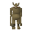
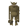
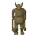
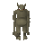
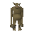

Thrower Troll
| Config name | death_troll_thrower5 |
| NPC id | 1105 |
| Combat level | 67 |
| Hitpoints | 95 |
| Attack / Strength / Defence | 30 / 80 / 30 |
| Respawn | 50 ticks |
| Options | Attack |
| Category | troll_thrower |
| Aggression | aggressive_ranged |
| Wander range | 0 tiles from spawn |
| Max range | 2 tiles from spawn |
| Defined in | scripts/quests/quest_death/configs/quest_death.npc |
| Bonuses | Magic def 200, Range def 200 |
Thrower Troll
Small for a troll but mean, ugly and throws rocks.
Show all 2 spawns on the world map → Open in knowledge graph →
Drops
Drop script: scripts/areas/area_burthorpe/scripts/death_troll_thrower.rs2 (category handler _troll_thrower)
Always dropped
| Item | Quantity | Rarity | Notes |
|---|---|---|---|
| 1 | Always | if npc_type = troll_prison_guard1 if npc_type = troll_prison_guard1_awake if %troll_quest < ^troll_freed_godric if ~obj_gettotal(troll_key_godric) = 0 | |
| 1 | Always | if npc_type = troll_prison_guard2 if npc_type = troll_prison_guard2_awake if %troll_freed_eadgar = ^false if ~obj_gettotal(troll_key_eadgar) = 0 | |
| 1 | Always | ||
| 1 | Always |
Locations
| Area | Coordinates | Level | Count | Map |
|---|---|---|---|---|
| Death Plateau | 2851, 3598 | 0 | 1 | view |
| Death Plateau | 2870, 3600 | 0 | 1 | view |
Quests
Related NPCs (category troll_thrower)

Thrower Troll
Thrower Troll
Thrower Troll
Thrower Troll
Thrower TrollReferenced in scripts
scripts/quests/quest_death/scripts/quest_death.rs2